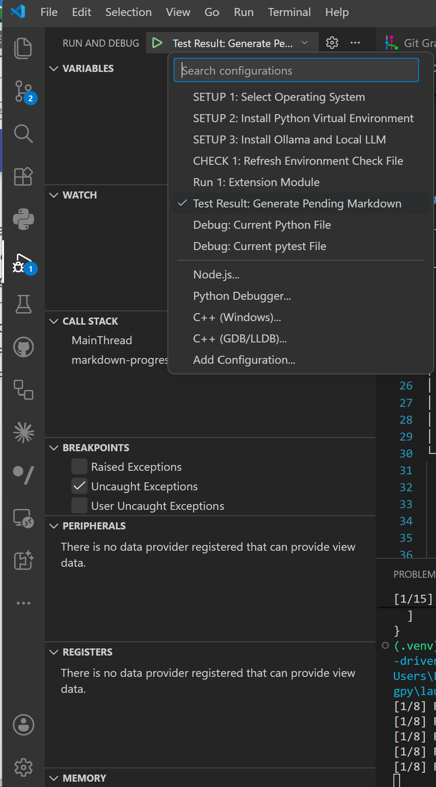
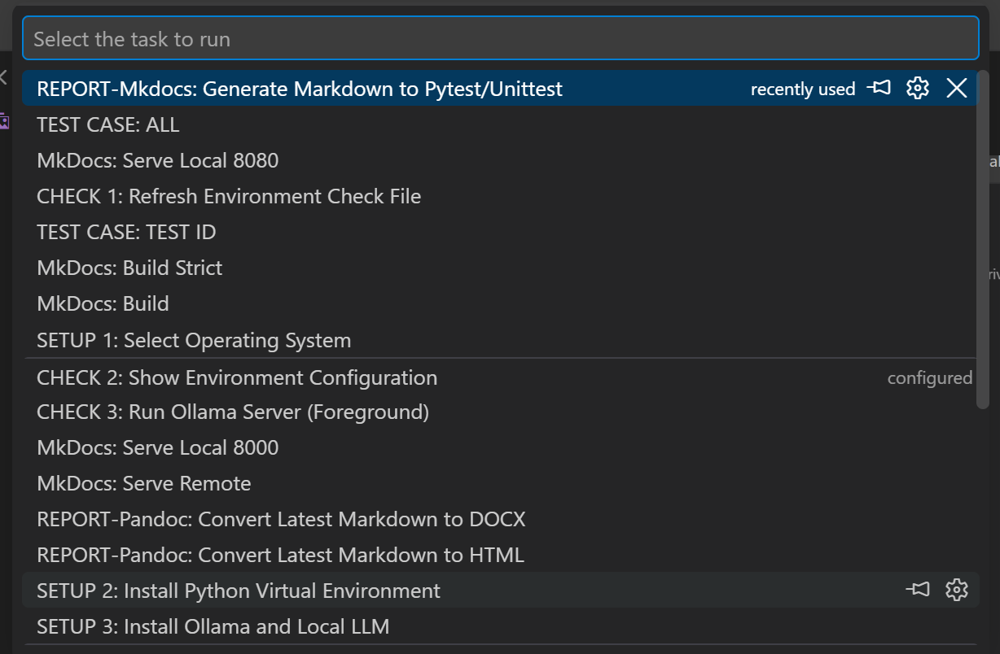
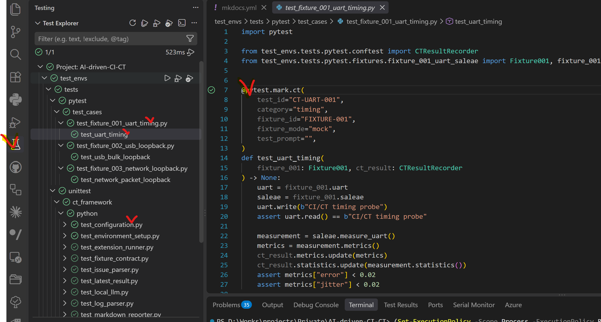
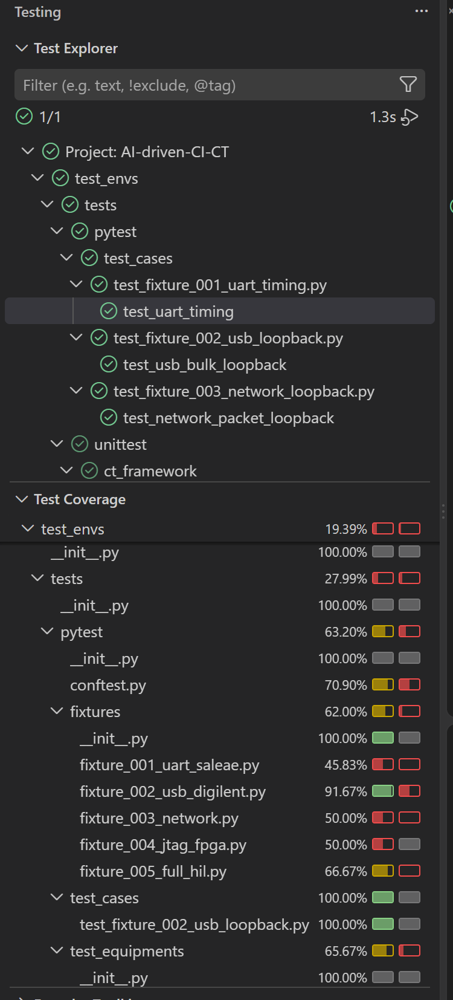
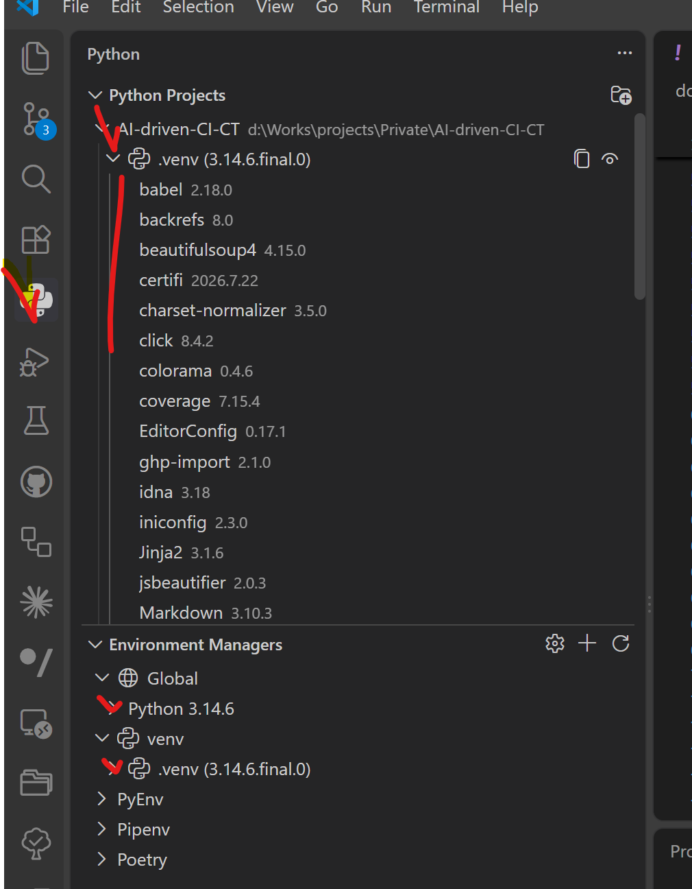

VS Code Environment
VS Code Files
Go To VS Code Testing
- VS Code Testing
https://code.visualstudio.com/docs/debugtest/testing
- VS Code Testing for Python
https://code.visualstudio.com/docs/python/testing
.vscode/
├── settings.json # Python interpreter, analysis, and Testing
├── launch.json # Run and Debug configurations
└── tasks.json # Setup, check, test, report, and MkDocs tasks
| File | Responsibility |
|---|---|
settings.json |
Define project settings for Testing and the Python Extension |
launch.json |
Define Run and Debug configurations |
tasks.json |
Define Run Tasks configurations |
There is currently no .vscode/extensions.json; extension recommendations are not managed by the repository.
settings
- VS Code Testing for Python
https://code.visualstudio.com/docs/python/testing
- Source:
.vscode/settings.jsonConnected VS Code features: Testing and Python Extension{ //.venv //Python Automatic Environment Activation // true: automatically activate venv (.\.venv\Scripts\Activate.ps1) // false: do not automatically activate venv "python.terminal.activateEnvironment": false, //venv path for Python "python.defaultInterpreterPath": "${workspaceFolder}/.venv/Scripts/python.exe", //Python Testing Configuration "python.testing.pytestEnabled": true, "python.testing.unittestEnabled": false, "python.testing.pytestArgs": [ "-p", "no:cacheprovider", "test_envs/tests/pytest", "test_envs/tests/unittest" ], "python.testing.cwd": "${workspaceFolder}", "python.testing.autoTestDiscoverOnSaveEnabled": true, "python.analysis.extraPaths": [ "${workspaceFolder}" ] }
| Setting | Current value | Effect |
|---|---|---|
python.defaultInterpreterPath |
${workspaceFolder}/.venv/Scripts/python.exe |
Testing, debugging, and most Tasks use the project virtual environment |
python.terminal.activateEnvironment |
false |
New terminals do not automatically activate the selected environment |
python.testing.pytestEnabled |
true |
VS Code Testing uses the pytest adapter |
python.testing.unittestEnabled |
false |
Prevents duplicate native-unittest discovery |
python.testing.pytestArgs |
Cache option plus two test roots | Discovers pytest CT and unittest.TestCase through pytest |
python.testing.cwd |
${workspaceFolder} |
Resolves test_envs.* imports from the repository root |
python.testing.autoTestDiscoverOnSaveEnabled |
true |
Recollects tests after test-file saves |
python.analysis.extraPaths |
${workspaceFolder} |
Lets Pylance resolve repository packages |
-p no:cacheprovider disables pytest's cache provider, so VS Code discovery and execution do not create or update .pytest_cache.
tasks
- Source:
.vscode/tasks.json
Connected VS Code feature: Run Tasks{ "version": "2.0.0", "tasks": [ //Setup Task Section // This section contains tasks for setting up the development environment, including selecting the OS, installing Python virtual environment, and installing Ollama and local LLM. // Each task is labeled with a "SETUP" prefix for easy identification. { "label": "SETUP 1: Select Operating System", "type": "process", "command": "python", "args": [ "-m", "test_envs.tools.configuration", "select-os" ], "presentation": { "reveal": "always", "panel": "dedicated", "clear": true }, "problemMatcher": [] }, { "label": "SETUP 2: Install Python Virtual Environment", "type": "process", "command": "python", "args": [ "-m", "test_envs.tools.environment_setup", "python" ], "problemMatcher": [] }, { "label": "SETUP 3: Install Ollama and Local LLM", "type": "process", "command": "${config:python.defaultInterpreterPath}", "args": [ "-m", "test_envs.tools.environment_setup", "ollama" ], "problemMatcher": [] }, // Check Task Section // This section contains tasks for checking the environment and running the Ollama server. // Each task is labeled with a "CHECK" prefix for easy identification. { "label": "CHECK 1: Refresh Environment Check File", "type": "process", "command": "${config:python.defaultInterpreterPath}", "args": [ "-m", "test_envs.tools.configuration", "check" ], "problemMatcher": [] }, { "label": "CHECK 2: Show Environment Configuration", "type": "process", "command": "${config:python.defaultInterpreterPath}", "args": [ "-m", "test_envs.tools.configuration", "config" ], "problemMatcher": [] }, { "label": "CHECK 3: Run Ollama Server (Foreground)", "type": "process", "command": "${config:python.defaultInterpreterPath}", "args": [ "-m", "test_envs.tools.environment_setup", "serve" ], "presentation": { "reveal": "always", "panel": "dedicated", "clear": true }, "problemMatcher": [] }, // Test Case Task Section // "TEST CASE" prefix for easy identification and Input Section for test case ID and fixture mode { "label": "TEST CASE: ALL", "type": "process", "command": "${config:python.defaultInterpreterPath}", "args": [ "-m", "pytest", "-p", "no:cacheprovider", "test_envs/tests/pytest/test_cases", "--fixture-mode", "${input:fixtureMode}" ], "group": { "kind": "test", "isDefault": true }, "problemMatcher": [] }, { "label": "TEST CASE: TEST ID", "type": "process", "command": "${config:python.defaultInterpreterPath}", "args": [ "-m", "pytest", "-p", "no:cacheprovider", "test_envs/tests/pytest/test_cases", "--test-id", "${input:testCaseId}", "--fixture-mode", "${input:fixtureMode}" ], "group": { "kind": "test", "isDefault": false }, "problemMatcher": [] }, // Report Task Section // This section contains tasks for generating and converting test reports. // Each task is labeled with a "REPORT" prefix for easy identification. { "label": "REPORT-Mkdocs: Generate Markdown to Pytest/Unittest", "type": "process", "command": "${config:python.defaultInterpreterPath}", "args": [ "-m", "test_envs.tools.test_result", "--pending", "--docs" ], "problemMatcher": [] }, { "label": "REPORT-Pandoc: Convert Latest Markdown to HTML", "type": "process", "command": "${config:python.defaultInterpreterPath}", "args": [ "-m", "test_envs.tools.pandoc_reporter", "--latest", "--format", "html" ], "problemMatcher": [] }, { "label": "REPORT-Pandoc: Convert Latest Markdown to DOCX", "type": "process", "command": "${config:python.defaultInterpreterPath}", "args": [ "-m", "test_envs.tools.pandoc_reporter", "--latest", "--format", "docx" ], "problemMatcher": [] }, // MkDocs Task Section // This section contains tasks for serving and building MkDocs documentation. // Each task is labeled with a "MkDocs" prefix for easy identification. { "label": "MkDocs: Serve Local 8000", "type": "process", "command": "${config:python.defaultInterpreterPath}", "args": [ "-m", "mkdocs", "serve" ], "problemMatcher": [] }, { "label": "MkDocs: Serve Local 8080", "type": "process", "command": "${config:python.defaultInterpreterPath}", "args": [ "-m", "mkdocs", "serve", "-a", "0.0.0.0:8080" ], "problemMatcher": [] }, { "label": "MkDocs: Serve Remote ", "type": "process", "command": "${config:python.defaultInterpreterPath}", "args": [ "-m", "mkdocs", "serve", "-a", "0.0.0.0:8000" ], "problemMatcher": [] }, { "label": "MkDocs: Build", "type": "process", "command": "${config:python.defaultInterpreterPath}", "args": [ "-m", "mkdocs", "build" ] }, { "label": "MkDocs: Build Strict", "type": "process", "command": "${config:python.defaultInterpreterPath}", "args": [ "-m", "mkdocs", "build", "--strict" ] } ], // End of tasks array // End of tasks section // Inputs section (Test case and fixture mode inputs) // "TEST CASE: TEST ID", and "TEST CASE: ALL" "inputs": [ { "id": "testCaseId", "type": "pickString", "description": "TEST ID", "options": [ "CT-UART-001", "CT-USB-001", "CT-NETWORK-001" ], "default": "CT-UART-001" }, { "id": "fixtureMode", "type": "pickString", "description": "Fixture mode", "options": [ "marker", "mock", "hil" ], "default": "marker" } ] }
launch
- Run and Debug https://code.visualstudio.com/docs/debugtest/debugging https://code.visualstudio.com/docs/debugtest/debugging-configuration
- Source:
.vscode/launch.jsonConnected VS Code feature: Run and Debug{ "version": "0.2.0", "configurations": [ // // Setup Section : OS and Python/LLM Envs { "name": "SETUP 1: Select Operating System", "type": "debugpy", "request": "launch", "python": "python", "module": "test_envs.tools.configuration", "args": ["config"], "preLaunchTask": "SETUP 1: Select Operating System", "console": "internalConsole", "internalConsoleOptions": "neverOpen", "cwd": "${workspaceFolder}", "justMyCode": true }, { "name": "SETUP 2: Install Python Virtual Environment", "type": "debugpy", "request": "launch", "python": "python", "module": "test_envs.tools.configuration", "args": ["config"], "preLaunchTask": "SETUP 2: Install Python Virtual Environment", "console": "internalConsole", "internalConsoleOptions": "neverOpen", "cwd": "${workspaceFolder}", "justMyCode": true }, { "name": "SETUP 3: Install Ollama and Local LLM", "type": "debugpy", "request": "launch", "python": "${config:python.defaultInterpreterPath}", "module": "test_envs.tools.configuration", "args": ["config"], "preLaunchTask": "SETUP 3: Install Ollama and Local LLM", "console": "internalConsole", "internalConsoleOptions": "neverOpen", "cwd": "${workspaceFolder}", "justMyCode": true }, { "name": "CHECK 1: Refresh Environment Check File", "type": "debugpy", "request": "launch", "python": "${config:python.defaultInterpreterPath}", "module": "test_envs.tools.configuration", "args": ["config"], "preLaunchTask": "CHECK 1: Refresh Environment Check File", "console": "internalConsole", "internalConsoleOptions": "neverOpen", "cwd": "${workspaceFolder}", "justMyCode": true }, // Run and Debug Section { "name": "Run : Extension Module (Not Support Now)", "type": "debugpy", "request": "launch", "python": "${config:python.defaultInterpreterPath}", "module": "test_envs.tools.extension_runner", "args": ["--module", "test_envs.tools.extensions.example"], "console": "integratedTerminal", "cwd": "${workspaceFolder}", "justMyCode": true }, // Reporting Section (Mkdocs Markdown and Pandoc(HTML/DOCX)) { "name": "REPORT-Mkdocs: Generate Markdown to Pytest/Unittest", "type": "debugpy", "request": "launch", "python": "${config:python.defaultInterpreterPath}", "module": "test_envs.tools.test_result", "args": ["--pending", "--docs"], "console": "integratedTerminal", "cwd": "${workspaceFolder}", "justMyCode": true }, { "name": "REPORT-Pandoc: Convert Latest Markdown to HTML", "type": "debugpy", "request": "launch", "python": "${config:python.defaultInterpreterPath}", "module": "test_envs.tools.pandoc_reporter", "args": ["--latest", "--format", "html"], "console": "integratedTerminal", "cwd": "${workspaceFolder}", "justMyCode": true }, { "name": "REPORT-Pandoc: Convert Latest Markdown to DOCX", "type": "debugpy", "request": "launch", "python": "${config:python.defaultInterpreterPath}", "module": "test_envs.tools.pandoc_reporter", "args": ["--latest", "--format", "docx"], "console": "integratedTerminal", "cwd": "${workspaceFolder}", "justMyCode": true } ], // End of Configurations Section // Inputs Section for fixture mode selection (Not use currently, reserved for future use) "inputs": [ { "id": "fixtureMode", "type": "pickString", "description": "Fixture mode", "options": ["marker", "mock", "hil"], "default": "marker" } ] }
Run and Debug
Source: .vscode/launch.json

Run and Debug-Setup and Check
| Launch configuration | Python | preLaunchTask |
Purpose | Related Task |
|---|---|---|---|---|
SETUP 1: Select Operating System |
System python |
Same label | Selects the project operating system, then displays the resulting configuration | Tasks-Setup and Check |
SETUP 2: Install Python Virtual Environment |
System python |
Same label | Creates .venv, then displays the resulting configuration |
Tasks-Setup and Check |
SETUP 3: Install Ollama and Local LLM |
Project Python | Same label | Installs or checks Ollama and the configured model, then displays the resulting configuration | Tasks-Setup and Check |
CHECK 1: Refresh Environment Check File |
Project Python | Same label | Refreshes check.json, then displays the resulting configuration |
Tasks-Setup and Check |
“Project Python” means ${config:python.defaultInterpreterPath}.
These four configurations intentionally overlap with Run Tasks. The matching Task performs the setup or check operation through preLaunchTask; after it succeeds, Run and Debug executes test_envs.tools.configuration config to show the current configuration.
Setup 1 and Setup 2 use system python. Setup 3 and later configurations use the interpreter selected by python.defaultInterpreterPath.
Run and Debug-Extension Module
| Launch configuration | Entry point | Current status | Future purpose |
|---|---|---|---|
Run : Extension Module (Not Support Now) |
test_envs.tools.extension_runner |
Not supported now | Extension execution with future GDB-based debugging |
This configuration is a placeholder and is not part of the currently supported test workflow. It has no matching Task. A future implementation will connect extension modules to GDB or another target debugger.
Run and Debug-Report
| Launch configuration | Entry point and arguments | Purpose | Related Task |
|---|---|---|---|
REPORT-Mkdocs: Generate Markdown to Pytest/Unittest |
test_envs.tools.test_result --pending --docs |
Generates pending Pytest and Unittest Markdown and publishes MkDocs result pages | Tasks-Report |
REPORT-Pandoc: Convert Latest Markdown to HTML |
test_envs.tools.pandoc_reporter --latest --format html |
Converts the latest Markdown report to HTML | Tasks-Report |
REPORT-Pandoc: Convert Latest Markdown to DOCX |
test_envs.tools.pandoc_reporter --latest --format docx |
Converts the latest Markdown report to DOCX | Tasks-Report |
These configurations overlap with Tasks-Report, but they do not use preLaunchTask. Run and Debug starts the same Python modules through debugpy, while Run Tasks executes them directly as foreground processes. Use Run Tasks for normal report generation and Run and Debug when breakpoints or debugger inspection are required.
Run and Debug-Inputs
| Input ID | Options | Current use |
|---|---|---|
fixtureMode |
marker, mock, hil |
Declared in launch.json, but no current launch configuration references it |
Run Tasks
Source: .vscode/tasks.json

Every Task has type: process, runs in the foreground, and has no isBackground flag. Setup 1 and Setup 2 use system python; all later Tasks use ${config:python.defaultInterpreterPath}.
Tasks-Setup and Check
| Task label | Module | Arguments | Function |
|---|---|---|---|
SETUP 1: Select Operating System |
test_envs.tools.configuration |
select-os |
Stores the selected OS in project configuration |
SETUP 2: Install Python Virtual Environment |
test_envs.tools.environment_setup |
python |
Creates .venv and installs dependencies |
SETUP 3: Install Ollama and Local LLM |
test_envs.tools.environment_setup |
ollama |
Installs/checks Ollama and pulls the configured model |
CHECK 1: Refresh Environment Check File |
test_envs.tools.configuration |
check |
Regenerates check.json |
CHECK 2: Show Environment Configuration |
test_envs.tools.configuration |
config |
Prints the current project configuration |
CHECK 3: Run Ollama Server (Foreground) |
test_envs.tools.environment_setup |
serve |
Runs an Ollama server owned by the terminal Task |
The dedicated-terminal presentation is configured for Setup 1 and Check 3. Closing or stopping Check 3 ends the foreground server process owned by that Task.
Setup 1 through Setup 3 and Check 1 are also exposed through Run and Debug-Setup and Check. In Run and Debug, each matching Task runs first through preLaunchTask.
Tasks-TEST CASE
| Task label | Scope | Arguments | Test group |
|---|---|---|---|
TEST CASE: ALL |
All CT files in test_cases |
--fixture-mode ${input:fixtureMode} |
Default test Task |
TEST CASE: TEST ID |
One selected TEST ID | --test-id ${input:testCaseId} --fixture-mode ${input:fixtureMode} |
Non-default test Task |
Both Tasks disable the pytest cache provider and execute test_envs/tests/pytest/test_cases.
Tasks-Report
| Task label | Entry point | Function |
|---|---|---|
REPORT-Mkdocs: Generate Markdown to Pytest/Unittest |
test_envs.tools.test_result --pending --docs |
Generates missing Markdown and publishes MkDocs pages |
REPORT-Pandoc: Convert Latest Markdown to HTML |
test_envs.tools.pandoc_reporter --latest --format html |
Converts the latest Markdown to HTML |
REPORT-Pandoc: Convert Latest Markdown to DOCX |
test_envs.tools.pandoc_reporter --latest --format docx |
Converts the latest Markdown to Word |
The same report operations are available through Run and Debug-Report. Run Tasks is the normal execution path; Run and Debug uses debugpy when debugger inspection is needed.
Tasks-MkDocs
| Task label | Arguments | Address / result |
|---|---|---|
MkDocs: Serve Local 8000 |
mkdocs serve |
MkDocs default local address and port 8000 |
MkDocs: Serve Local 8080 |
mkdocs serve -a 0.0.0.0:8080 |
All interfaces, port 8080 |
MkDocs: Serve Remote |
mkdocs serve -a 0.0.0.0:8000 |
All interfaces, port 8000 |
MkDocs: Build |
mkdocs build |
Generates the static site |
MkDocs: Build Strict |
mkdocs build --strict |
Treats build warnings as errors |
The MkDocs: Serve Remote source label currently contains a trailing space.
Tasks-Inputs
| Input ID | Type | Options | Default | Used by |
|---|---|---|---|---|
testCaseId |
pickString |
CT-UART-001, CT-USB-001, CT-NETWORK-001 |
CT-UART-001 |
TEST CASE: TEST ID |
fixtureMode |
pickString |
marker, mock, hil |
marker |
Both TEST CASE Tasks |
OS selection is not a Task or launch input. It is managed by test_envs/configs/config.json through the Setup 1 command.
Testing
-
Pytest and Unittest

-
Testing Coverage

Discovery model
VS Code Testing
└── Microsoft Python extension
└── pytest adapter
├── test_envs/tests/pytest
│ └── CT test cases: mock or hil
└── test_envs/tests/unittest
└── unittest.TestCase collected by pytest
| Component | Current rule |
|---|---|
| Adapter | pytest only |
| Interpreter | Project .venv |
| Working directory | Workspace root |
| CT root | test_envs/tests/pytest |
| unittest root | test_envs/tests/unittest |
| File pattern | test_*.py from pytest.ini |
| Automatic discovery | Enabled on save |
| Cache provider | Disabled |
Discovery lifecycle
Open workspace
↓
Load settings.json
↓
Select .venv/Scripts/python.exe
↓
Run pytest collection from workspace root
↓
Build the unified Testing tree
| Trigger | Result |
|---|---|
| Workspace open | Initial collection of both configured roots |
| Save a test file | Automatic rediscovery |
| Refresh Tests | Full manual recollection |
| Change Testing settings | Adapter restarts with the new scope |
Execution contracts
| Area | Identifier | Mode | Result |
|---|---|---|---|
| pytest CT | TEST ID | Final mode is mock or hil |
<execution-id>_result.json + <execution-id>_test.log |
| unittest | Test function | Fixture mode is not used | <execution-id>_result.json + <execution-id>_result.log |
The Testing panel supports running or debugging the full tree, a folder, a module, a class, or one test function. CT normalization is handled by test_envs/tests/pytest/conftest.py; unittest normalization is handled by test_envs/tests/unittest/conftest.py.
Discovery troubleshooting
| Symptom | Check |
|---|---|
| No tests found | Verify both paths in python.testing.pytestArgs |
| Import error | Verify the .venv interpreter, workspace cwd, and extraPaths |
.venv missing |
Run SETUP 2: Install Python Virtual Environment |
| Duplicate unittest nodes | Keep python.testing.unittestEnabled set to false |
| Cache path warning | Keep -p no:cacheprovider in pytestArgs |
Python Extension

| Stage | Interpreter |
|---|---|
| Setup 1: OS selection | System python |
Setup 2: .venv creation |
System python |
| Setup 3 and later | ${workspaceFolder}/.venv/Scripts/python.exe |
| VS Code Testing | ${workspaceFolder}/.venv/Scripts/python.exe |
| Python terminal | Automatic environment activation is disabled; activate .venv manually when needed |